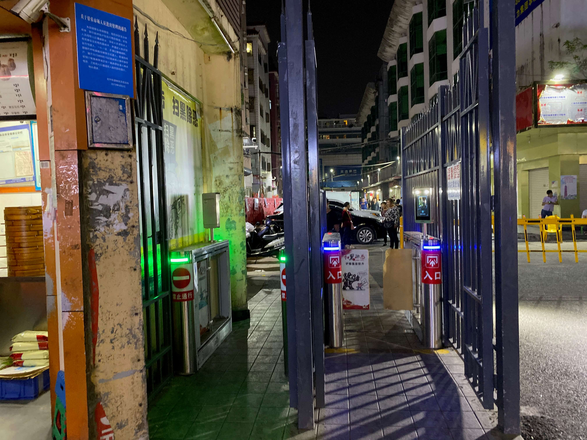
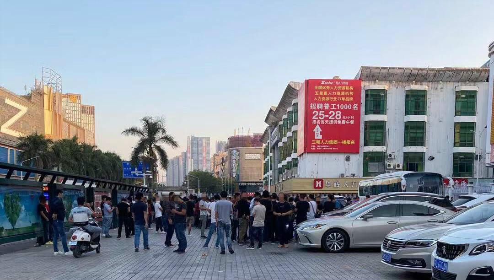
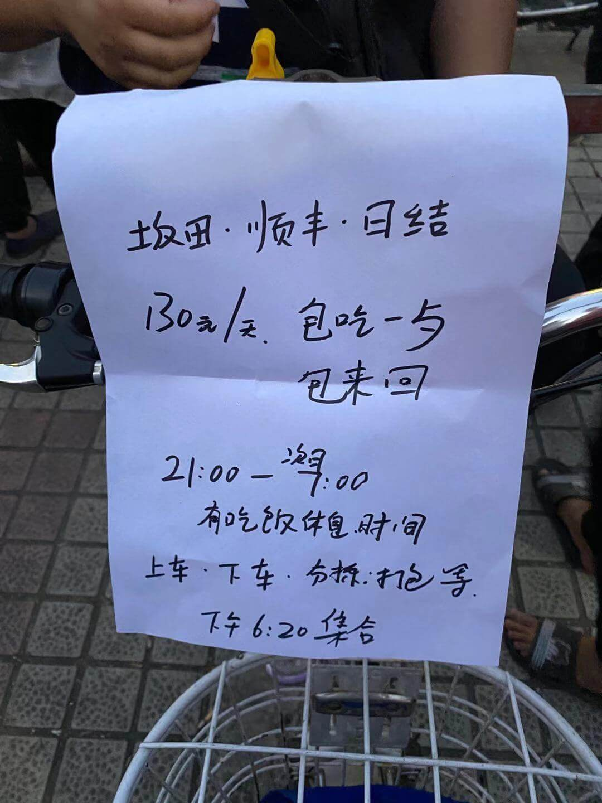
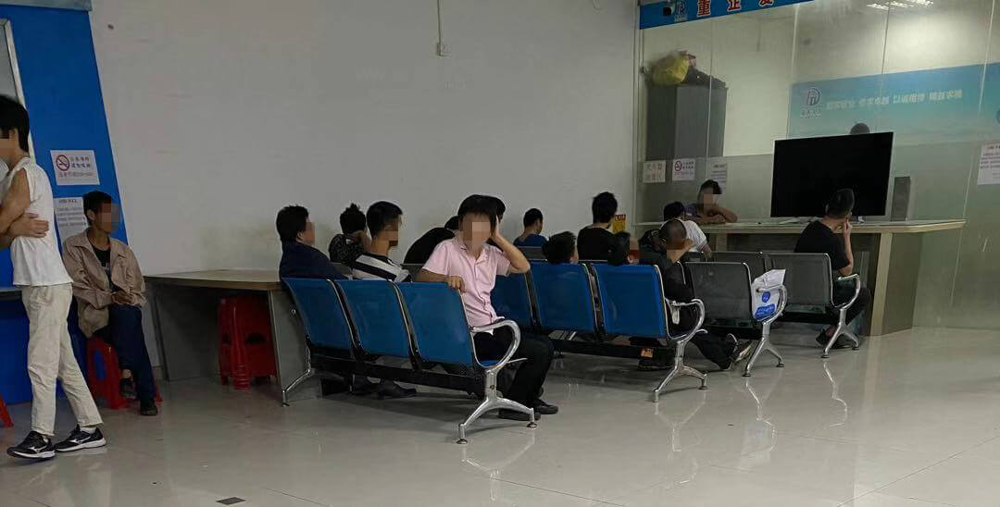
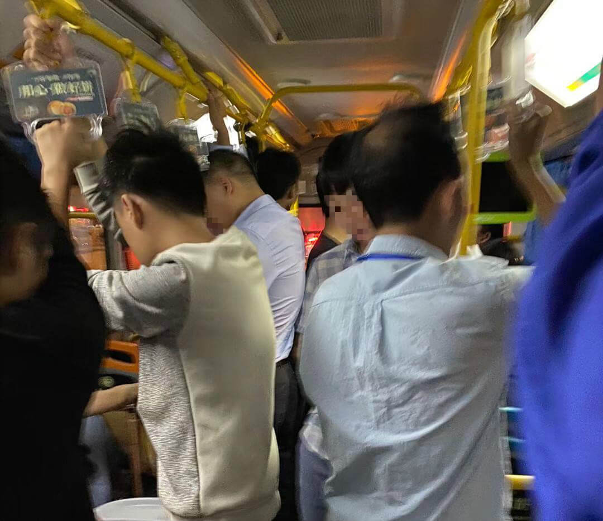
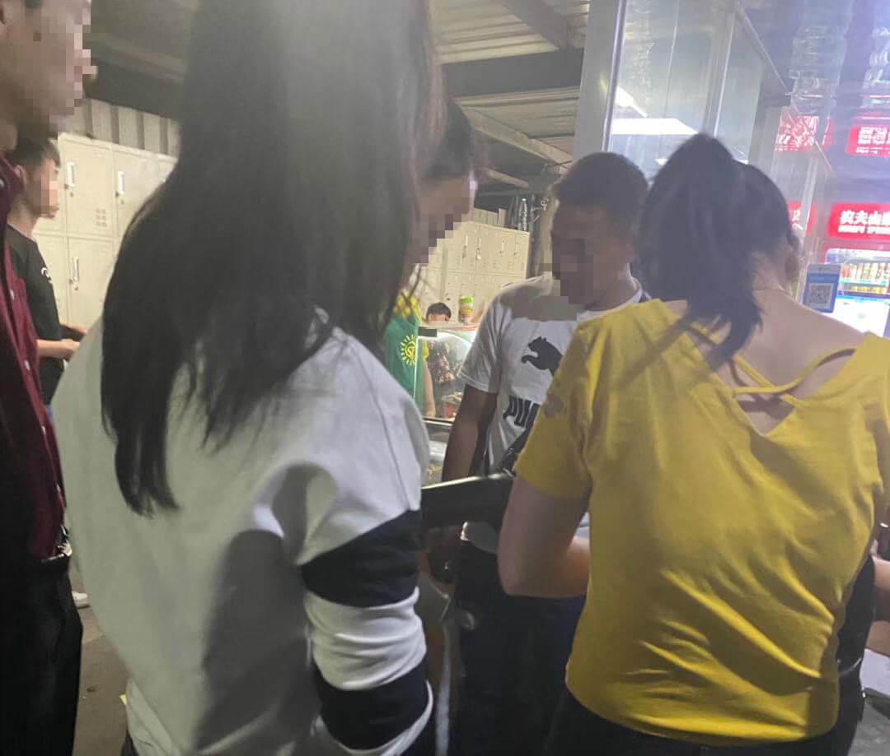
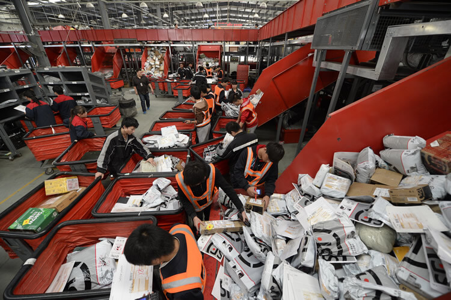
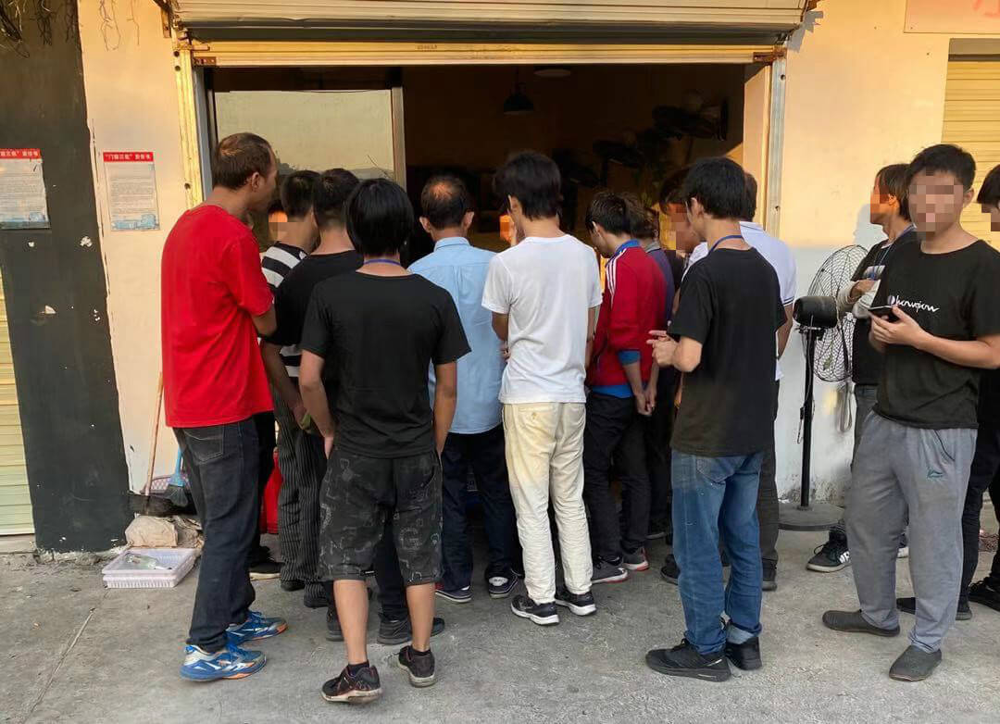

三和变了，两米高的栅栏立了起来。
三和没有变，三和大神还有日结可做。

栅栏外。
夜晚，三和附近的网吧中一双双眼睛都发光，仿佛比屏幕还亮。上网累了，出来吃个炒饭，再要上几串烧烤。烟火气和烧烤味道，弥漫在整个巷子里，天亮后还久久不肯散去。
白天。三和人力资源前方的停车场空地，下午四点多就会充满各种气味：煮玉米的味道、人的味道、劣质香烟的味道。
那里人头攒动，各种摊商。不过驻足围观最多的还是招聘零工。
栅栏内。
各种生意还在做，手机号微信号还在收，三和“优衣库”营业照常，各种廉价炒粉炒面依旧慰藉了无数人们。
只是在海信酒店楼前的三和大神，再没有日结可找，因为铁墙内只招“厂狗”。

随着万科的“升级改造”计划的推进，愈多“农民房”变得光鲜亮丽，消费水平也随着上涨了，大神们不得不干更多的活，双十一是消费的节日，也是大神们的“假日”，只要忙碌一天，可以比以前休得更多。

双十一的战斗不是从零点才开始的，其实前一天，就有无数像我一样的人奔波在找快递日结的战场上。
我在三和四处转了转，根本没有之前说的200元一天的日结工价，要么是京东这种苦工，要么是大神们都不屑于去的低价工。旁边有工友说：“京东工资高，可太累，全是大件。上次做了一次，瘫痪了一周，是真的瘫痪。筋骨好也不要去啊，吃人的。”

“还差两个，不来就没了。”顺丰中介在价牌旁喊着，已经快六点了，我越来越着急，一百三就一百三吧，我递上我的身份证。
可交了身份证，我怎么进入铁栅栏呢？原来别人刷完卡，妳跟着就可以溜进去。

到了集合地点，我还没吃晚饭，问坐在一起的老哥：“晚上会管饭吗？”这位老哥告诉我，都要先吃了饭再去，体力消耗非常大，他们的饭要12点以后才有。
6点20分开始点名，先是装车的跟着领队走了，再是打包的，最后才是我们分拣。

分拣人少，没有车接送，只能跟着领队坐公交。一路慢悠悠，一个小时的公交，才到达顺丰坂田的中转站。

到了中转站，领队先把我们所有人的手机都收了。
穿着酸臭的黄马甲和穿顺丰工装的正式工分列两队。
一个小工头扯着嗓子让我们静静，“我们出来为了什么，赚钱，快过年了，我们得拿钱回家，大家好好干”，“安全事项我已经说过了，万一出了事，我没说，是我们的责任，我说了，就是你们的责任了”，“都打起精神，不要给我出岔子，干完了就可以拿钱了。”
大家鸦雀无声地散了，工头安排我们去扔包。

我们四人一组，有一个正式工负责看管。有人负责接麻袋，有人负责剪开封口，有人负责扔包。
包裹一劲地被运送过来，丝毫没有停歇。我们完全被机器控制，四个人必须紧跟传送带节奏，不然货物会越堆越多。
根本没有休息的时间，更不用说喝口水，可正式工站在一边总是嫌弃我们速度太慢。“你们干什么呢，动作这么慢，还想不想要工钱了。”一个小领导漫步走过来，突然对着一个工友大喊。
“怎么慢了，你这个屌人，我停都没停。”有工友忍不住了，几次上去要打他。很快，他被开除了，不知有没有拿到工钱。“你要是真厉害，还能过来做这种工作？”工友走了，正式工说了这样一句话。
挨到了两点，终于可以去吃饭了，每人只能领一盒土豆丝，一盒米饭，饭菜都寡淡的很，但是不管饭菜有多差劲多难吃，体力活后都需要补充能量，我们只能狼吞虎咽吃完。
上半夜疯狂扔包的时候，还没有觉得有什么不适。饭后小咪一会，被喊起来要继续做工，才发觉胳膊和手指酸痛。
下半夜，我们做到五点就没活，坐着休息，大家都很庆幸今晚货还不算多。结束后领回身份证和工资。

散工的时候，三和过来的每一个人脸上都洋溢着轻松的表情。后来，我才知道原来他们都是没钱被逼无奈才做了今晚的日结，不然就等明天220的工价了。
如果双十一期间，找不到足够的工做，之后找工只能更加困难，只能“挂逼”。
看着手里拿到的工资，我怅然若失，从晚七点到早七点才挣了一百三十块。
回去的公交车上，我睡了一路，回到三和已经八点多了。
拖着一身疲惫，回到家里，我似乎已经对双十一脱敏了，劳动真的可以抵抗消费主义。
玩淘宝的喵币？还是京东复杂的优惠券？我不想再把有限的时间献给它们精心设计的陷阱了。
囤货？可我那狭小的出租屋哪有空间去摆放便宜几十块钱的洗衣液或者卫生纸呢？
消费在我们这个时代成了理所当然的正确，它简单又充满诱惑，使得我们无暇关心复杂的商品生产过程。
从设计到生产，从包装到运输，商品生产的每个环节都凝结了工人的心力。
可在我们抢购下单那一刹那，商品变成了我们账单上数字，这些数字淹没了商品所承载着的人与人之间的关系。
劳动抵抗消费主义，并非说劳动神圣，而是我们通过劳动发现了劳动者。
- source: 尖椒部落
- link: https://www.jianjiaobuluo.com/content/107512